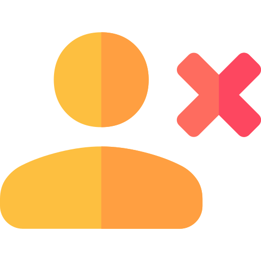

<div class="others-users">
    <div class="m-user" *ngFor="let item of followings">
      <div class="row" >
        
        <div class="p-10"></div>
        <div class="column-perfil">
          <h3 class="over-name" routerLink="perfil/{{item.id}}">{{ item.nome }}</h3>
          <p>{{ item.nome }}</p>
        </div>
      </div>
      
    </div>
  </div>